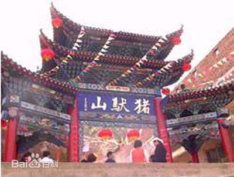

猪驮山
猪驮山，原名萱帽山，位于兰州永登县苦水镇苦水街河西一公里处。旅游景点。是康熙御封的"渗金佛祖"得道圣地。始建于清康熙年间，300多年来，不断增修，已初具规模。猪驮山顶远眺西山丹霞地貌，万山红遍甚是壮观。传说，自宋代以来，萱帽山上就有寺庙，叫西山寺。寺内有佛殿、碑碣，千年香火延续，游踪不止。清文宗咸丰己未年(1859年)刻制的《西萱帽山庙宇并立碑志》记述，庄浪县之南有堡曰苦水，堡西二里许，层峦叠嶂，钟灵毓秀，望之蔚然而深秀者萱帽山也。上有三宝殿一座，殿下左列地藏菩萨，十殿阎君殿，庙宇参差，残碑断碣，犹有存者。明神宗万历四十一年(1613年)，陕西民郑王姓，同堡十王会众等略为创修。清康熙年间，又由本邑僧人风颠和尚修葺。乾隆、嘉庆、咸丰年间，均由广大信士邑人捐金重修绘画。“萱帽猪驮”成为兰州胜景。
萱帽山变为猪驮山的来历与一位济公式的人物风颠和尚有关。相传，清世祖顺治八年(1651年)农历四月初八，今永登县苦水镇苦水街东巷李氏家出生一儿，俗名李福， “及长不愿娶妻，父母强为之授室，而与床笫无沾染，邑有王吒什者，高僧也，遂受戒而师事之，断指出家，以示决心。后飞锡四方，恒以济孤恤贫救灾难为事，尤其治垂危之病，施回生之术无不效，所得谢仪作修桥施粥之用。”风颠自命僧名无情，后改僧名超度，号风颠，俗称李佛爷，后人亦称为风颠济公。李佛自小念过两三年私塾，十一二岁开始务农，十八岁出家到萱帽山修行，他见山寺寥落，许愿补葺。为了修葺十王殿，风颠天天赶一头呼作“自醒”的猪，搬运砖瓦，自己身背六块，猪驮四块，这一行动感动了周围的人，大家都来义务投工，募化捐资，最后终于实现了夙愿。自此，萱帽山便叫成了“猪驮山”。李福于清圣祖康熙四十九年(1710年)农历腊月初八圆寂于西安市。传说，他圆寂后，众僧在他端坐的遗容上涂金粉，一涂再涂，总是不显光亮，觉得奇怪。不久，消息传到京城，康熙皇帝说：“莫非他是渗金佛?”一语道破，风颠遗容顿生金光，灿灿照人。因此，后人也常称他为“渗金佛祖”。风颠和尚“舍身求雨”、“煮身济赈”、“怪治久病”、“翻地压砂”、“巧计修桥”等故事在永登地区广为流传，家喻户晓。今西安碑林中还存有他绘的达摩像石刻，《风颠和尚言语录》《渗金佛祖救劫经》今仍流传于民间。
